The story of pasta
This is a story of the most brilliant dish ever made by man
ความหมายของพาสต้า
คือชื่อเรียกโดยรวมของอาหารอิตาลีประกอบด้วยเส้นที่ทำจากแป้งสาลี น้ำ ไข่ เกลือ และ น้ำมันมะกอก จากนั้นจึงนำมารีดเป็นแผ่นและตัดเป็นเส้น ทำให้สุกโดยการต้ม รับประทานกับซอสหลากหลายประเภท ที่มักมีส่วนประกอบหลักคือ น้ำมันมะกอก ผัก เครื่องเทศ และเนยแข็ง เส้นพาสตาเป็นชื่อเรียกโดยรวมของเส้นหลากหลายประเภท
ที่มาของพาสต้า
ประเภทของเส้นพาสต้า
รูปแบบของเส้นพาสต้าแบ่งออกได้มากกว่า 350 ชนิด แต่ที่เรารู้จักกันอย่างดีก็มีอยู่ไม่กี่ชนิด ดังนี้
Spaghetti (สปาเกตตี้)
แบบเส้นกลมยาว (ไม่มีรู)
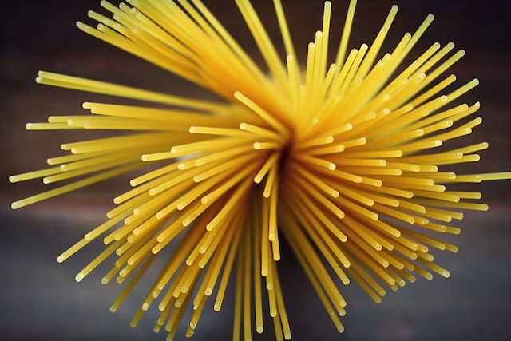
Macaroni (มักกะโรนี)
แบบเส้นกลมยาวมีรูกลมตรงกลาง
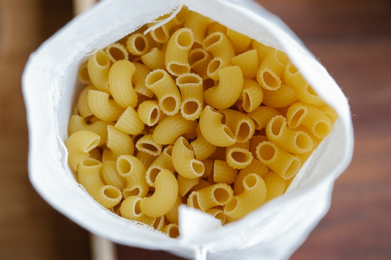
Penne (เพนเน)
แบบท่อตัดเฉียงที่ปลายทั้งสองด้าน
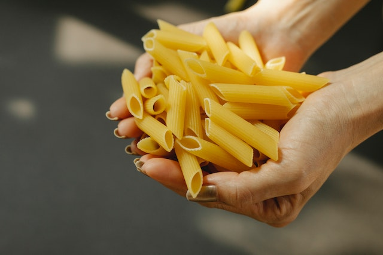
Fettuccine (เฟตูชินี)
แบบเส้นแบนคล้ายริบบิ้น
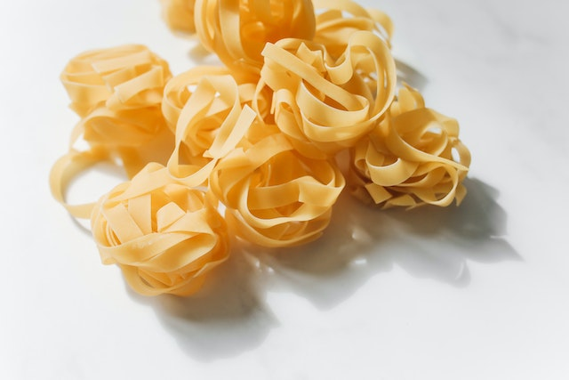
Fusilli (ฟูซิลี)
แบบเส้นเกลียว
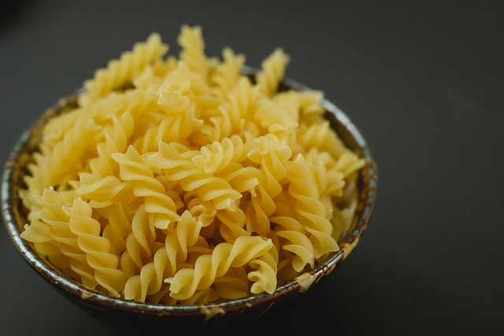
Ravioli (ราวิโอลี)
แบบแผ่นห่อไส้ผักหรือเนื้อสัตว์ ลักษณะคล้ายเกี๊ยว
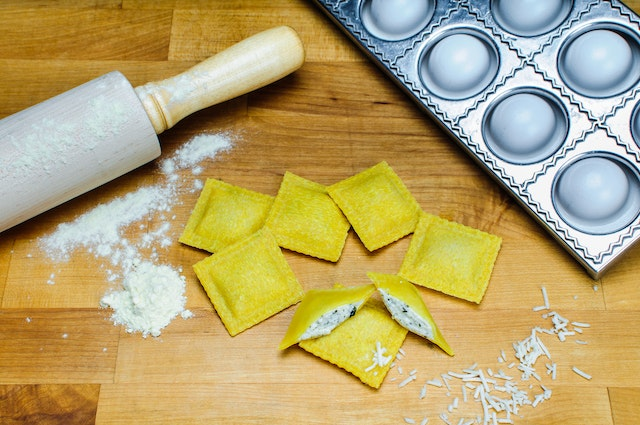
Lasagne (ลาซานญ่า)
แป้งแผ่นสี่เหลี่ยมใช้วางซ้อนสลับกับเครื่อง เช่น เนื้อหรือผัก
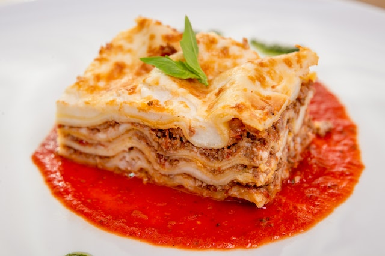
Linguine (ลิงกวินี่)
ลักษณะเป็นเส้นแบนๆเล็กๆยาวๆ
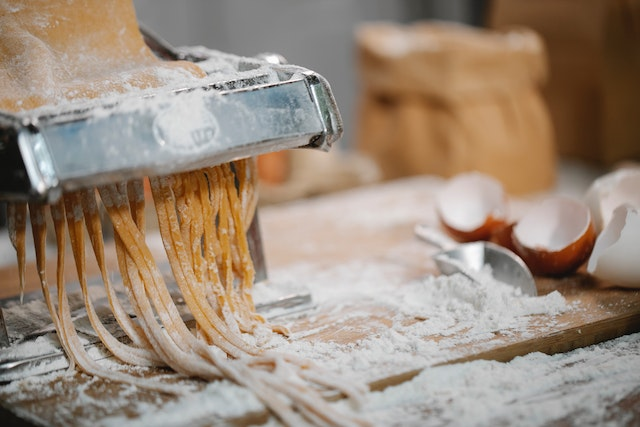
Capellini (คาเปลลินี)
หรือเรียกกันว่า "Angel Hair" พาสตาเส้นเล็กเรียวยาวประมาณเส้นหมี่ของบ้านเรา
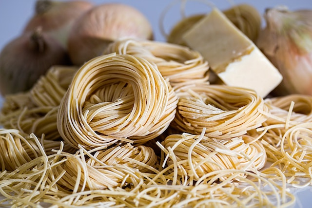
สูตรการทำสปาเก็ตตี้เพิ่มเติมง่ายๆ
|
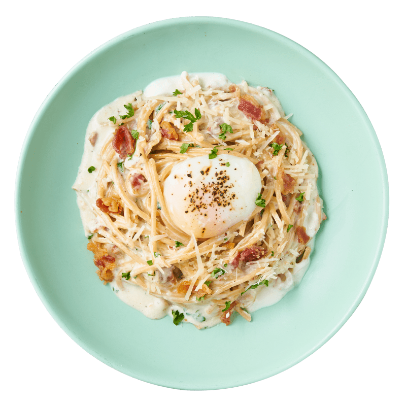 คาโบนาร่า |

สปาเก็ตตี้ครีมซอสกุ้ง |
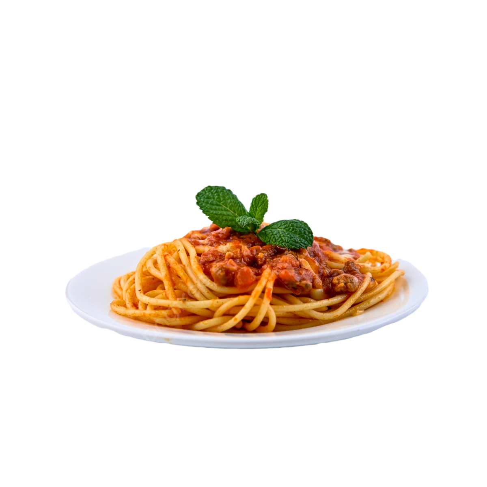 สปาเก็ตตี้ผัดซอสมะเขือเทศ |

สปาเก็ตตี้ผัดกระเทียมน้ำมันมะกอก |
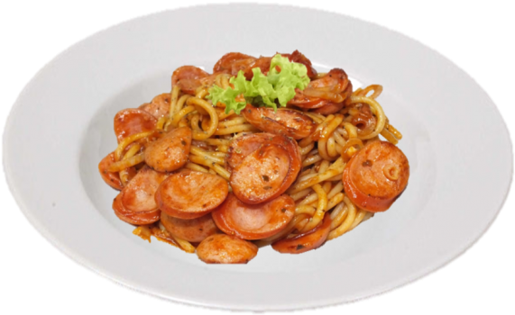 สปาเก็ตตี้ผัดไส้กรอก |